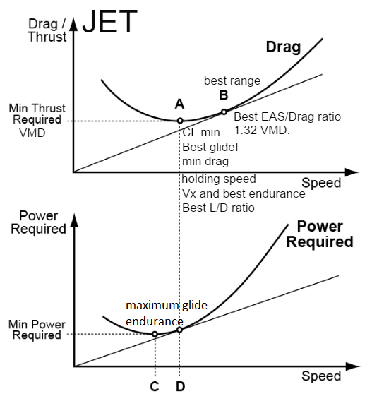
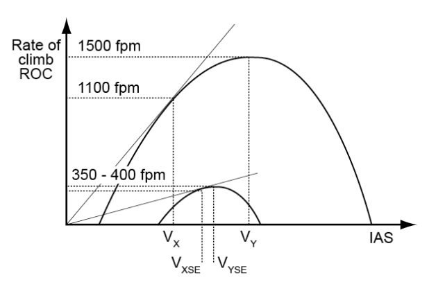
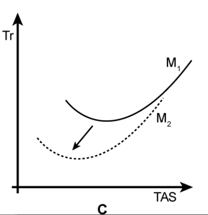
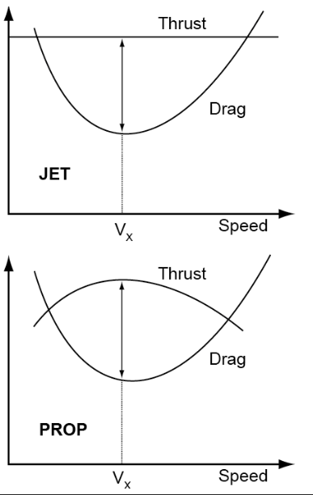
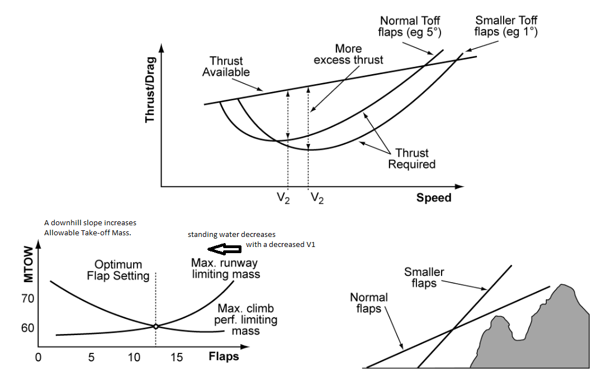
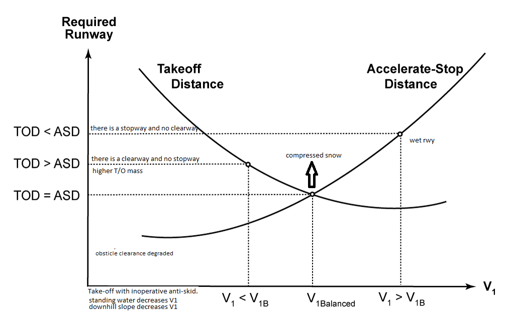

Clearway
STOPWAY = a defined rectangular area on the ground at the end of take-off run available prepared as a suitable area in which an aircraft can be stopped in the case of an abandoned take-off.
The absolute ceiling:
Net Performance = Gross performance diminished by certain value to allow for various contingencies that cannot be accounted for operationally, for example variations in piloting technique or temporary below average performance. It is improbable that the net performance will not be achieved in operation, provided the aircraft is flown in accordance with the recommended techniques.
Gross Flight Path (GFP) = The profile path of an aeroplane after it has reached the end of the take-off distance. The GFP is plotted using the gross performance data, and ends at the same horizontal distance from the point of take-off as does the NFP. It starts at the screen height and at any specific distance will always be above the NFP.
Net Flight Path (NFP) = The profile path of an aeroplane from the end of the take-off distance until it reaches 1 500 feet net height above reference zero. It is plotted using the net performance data.
TORA = Take-off Run Available
TODA = Take-off Distance Available (TORA + Clearway)
ASDA = Accelerate Stop Distance Available (TORA + Stopway)
LDA = Landing Distance Available (TORA - Displaced threshold)
Climb gradient
Centre of Gravity
- An area beyond the runway not less than 152 m wide under the control of airport authorities.
STOPWAY = a defined rectangular area on the ground at the end of take-off run available prepared as a suitable area in which an aircraft can be stopped in the case of an abandoned take-off.
The absolute ceiling:
- is the altitude at which the maximum rate of climb is zero.
- the altitude where a low specific rate of climb is achieved.
- the altitude which at maximum power the rate of climb of an aircraft has fallen to 100 ft per minute.
- The average performance that a fleet of aircraft should achieve if satisfactorily maintained and flown in accordance with the techniques described in the Flight Manual.
Net Performance = Gross performance diminished by certain value to allow for various contingencies that cannot be accounted for operationally, for example variations in piloting technique or temporary below average performance. It is improbable that the net performance will not be achieved in operation, provided the aircraft is flown in accordance with the recommended techniques.
Gross Flight Path (GFP) = The profile path of an aeroplane after it has reached the end of the take-off distance. The GFP is plotted using the gross performance data, and ends at the same horizontal distance from the point of take-off as does the NFP. It starts at the screen height and at any specific distance will always be above the NFP.
Net Flight Path (NFP) = The profile path of an aeroplane from the end of the take-off distance until it reaches 1 500 feet net height above reference zero. It is plotted using the net performance data.
TORA = Take-off Run Available
TODA = Take-off Distance Available (TORA + Clearway)
ASDA = Accelerate Stop Distance Available (TORA + Stopway)
LDA = Landing Distance Available (TORA - Displaced threshold)
Climb gradient
- Climb Gradient = ((Thrust - Drag) ÷ Weight (N)) × 100
- height gained over distance traveled through the air
- vario
- ROC Rate of Climb (ft/min) = TAS (kts) × Gradient (%) = 100 × 3.3 = 330 ft/min.
- tg descend angle = (%)
- TAS*siklószög*100/60
- the number of miles per unit of fuel (e.g. NM per kg of fuel).
- Fuel flow per unit of thrust.
- VX is the same (IAS); increases in terms of TAS
- VY decreases (IAS); but increases in terms of TAS
Centre of Gravity
- forward
- Fuel consumption increases -> horizontal stab produces more lift down to pitch up the nose requires more lift
- stability increases
- aft
- improves the maximum range.
- improves the maximum range.

Glide

{kind=link}
JET
{kind=link}

PROP

increasing altitude and/or mass
{kind=link}
{kind=link}

{kind=link}
Vxse > Vx and Vyse < Vy

{kind=link}
decreasing mass

unaccelerated level flight

{kind=link}
Flaps

min speed on approach
- The aircraft has to maintain a speed of at least 1.3 x VStall (Vs)
- stalling speed or minimum steady flight speed at which the aeroplane is controllable.
- 1.3 VSO
- 30% above stall speed
- dry grass 1,2
- wet grass 1.3
- wet pavement 1.0
- taking-off on a runway with 1 % upslope: 1.05 (5% for 1 deg)
- short grass 1.15
- wet rwy 1.15
- "The landing distance, from a screen height of 50 ft, must not exceed 70 % of the landing distance available = a factor of 1.43." here, landing distance required
- wet snow: ldg distance increased
032-04 - Performance Class A: Aeroplanes Certificated Under CS25 Only
Class A
VMCG - Ground Minimum Control Speed
VLOF - Lift-off Speed
VMBE - Maximum Brake Energy Speed
VMCG ≤ VEF < V1
mistake in the load sheet the aeroplane is 100 kg heavier
limit the Take-off Mass
V2 MIN = Minimum take-off safety speed. It may not be less than:
• 1.13 VSR for turbojets and 2 and 3 engined turboprops
• 1.08 VSR for turbojets with provisions for obtaining a significant reduction in the one-engine-inoperative power-on stall speed and 4 engined turboprops
• 1.1 VMCA
In accordance with EASA CS 25 the take-off safety speed V2 MIN for turbo-propeller powered aeroplanes with more than three engines may not be less than:
If the aircraft rotates earlier and at a much faster rate than expected what is the likely reason?
No clearway, no stopway
Take-off distance = accelerate/stop distance = balanced condition ASDA=TODA
V1 = balanced
Clearway, no stopway
Take-off distance > accelerate/stop distance = unbalanced condition
V1 < V1 balanced
V1 has to be lower, to extend the maximum take-off distance and to reach a maximum take-off mass. If the pilot chooses a higher V1, the take-off mass has to be reduced!
Take-off distance < accelerate/stop distance = unbalanced condition
V1 > V1 balanced
V1 has to be higher, to utilize the longer accelerate/stop distance available and reaching a higher maximum take-off mass.
balanced condition will give the highest take-off mass for a given runway
Reduced take-off thrust
90 m + 0.125 D
For the take-off climb gradient calculations we always have to assume that the critical engine fails at the VEF speed
The engine failure take-off run is:
Class A
- take-off distance, dry runway with all engines operating: 1,15
- as reference stall speed and may not be less than 1-g stall speed.
- 1,23 VSR0 (cat A)
- 1.23 VSRO and must be maintained down to 50 ft height.
- increasing mass increases V1
- increasing the flap angle, decreases V1
- as density falls, V1 increases
- tailwinds reduce V1, and headwinds increase V1
- downward sloping runway V1 will decrease.
- V1 is not allowed to be greater than VR.
- slush thickness: Smaller reduction if thicker.
- minimum and maximum values of V1: VMCG, VR.
- V1 has to be equal to or higher than VMCG.
VMCG - Ground Minimum Control Speed
- VMCG is determined during flight testing using aerodynamic controls: no nosewheel steering and no crosswind.
- primary aerodynamic control only.
VLOF - Lift-off Speed
- The "maximum tire speed" limits: VLOF
- increasing mass increases VR
- VR must not be less than 1.05 VMCA and not less than V1.
- VR is the speed at which the pilot should start to rotate the aeroplane.
- min 1.05 VMCA
- Staight flight can not be maintained below VMCA, when the critical engine has failed.
- VMCA decreases with increasing pressure altitude. (kisebb nyomaték a járó HMnél)
- V2 for two-engine or three-engine turbo propeller powered aeroplanes may not be less than: 1.13 VSR
- 1.1 VMCA (VMC) (+10%)
- limited by VMCA: Flaps at high settings/With high pressure/With low temperature.
- take-off climb speed or speed at 35 ft.
- mostly V2<Vx,if increasing V2 allows higher TOM
VMBE - Maximum Brake Energy Speed
VMCG ≤ VEF < V1
mistake in the load sheet the aeroplane is 100 kg heavier
- VMU will be higher.
- VLOF in terms of ground speed. (this is the highest speed on ground roll)
- 15° up to a height of 400 ft.
limit the Take-off Mass
- Rate of rotation of the wheel at lift off and brake energy.
V2 MIN = Minimum take-off safety speed. It may not be less than:
• 1.13 VSR for turbojets and 2 and 3 engined turboprops
• 1.08 VSR for turbojets with provisions for obtaining a significant reduction in the one-engine-inoperative power-on stall speed and 4 engined turboprops
• 1.1 VMCA
In accordance with EASA CS 25 the take-off safety speed V2 MIN for turbo-propeller powered aeroplanes with more than three engines may not be less than:
- 1.08 VSR
If the aircraft rotates earlier and at a much faster rate than expected what is the likely reason?
- 1) The rotate speed, VR, has been miscalculated. : nem lesz much faster rate!
- 2) The stabilizer trim setting has been miscalculated.
- 4) The centre of gravity is too far aft.
No clearway, no stopway
Take-off distance = accelerate/stop distance = balanced condition ASDA=TODA
V1 = balanced
- The balanced field concept provides only one single V1 value.
- A balanced field length gives the minimum required field length in the event of an engine failure.
Clearway, no stopway
Take-off distance > accelerate/stop distance = unbalanced condition
V1 < V1 balanced
V1 has to be lower, to extend the maximum take-off distance and to reach a maximum take-off mass. If the pilot chooses a higher V1, the take-off mass has to be reduced!
- If there is a clearway and no stopway the take-off mass can be higher than the balanced field take-off mass, and the appropriate V1 needs to be lower than V1balanced.
Take-off distance < accelerate/stop distance = unbalanced condition
V1 > V1 balanced
V1 has to be higher, to utilize the longer accelerate/stop distance available and reaching a higher maximum take-off mass.
balanced condition will give the highest take-off mass for a given runway
Reduced take-off thrust
- should normally not be used when windshear is reported on the take-off path.
- only if the actual Take-off Mass (TOM) is lower than the field length limited TOM.
- If sufficient excess runway is available, the climb limited take-off mass and the climb gradient can be increased by increasing V2.
- The climb limited Take-off Mass is independent of the wind component.
- The climb limited Take-off Mass decreases with increasing OAT.
- we can reduce the required screen-height from 35 ft to only 15 ft for take-off on a wet runway
- A reduction of screen height is allowed in order to reduce weight penalties.
- Reduced take-off thrust should normally not be used when: the runway is contaminated.
- maximum crosswind for take-off on a contaminated runway surface is: 10 kts
- The safety margin with respect to the runway length is greatest.
- It should be determined on the basis of a 35 ft obstacle clearance with respect to the "net take-off flight path".
- the horizontal distance along the take-off path from the start of the take-off to a point equidistant between the point at which VLOF is reached and the point at which the aeroplane is 35 ft above the take-off surface.
90 m + 0.125 D
For the take-off climb gradient calculations we always have to assume that the critical engine fails at the VEF speed
The engine failure take-off run is:
- 1.5 times the distance from the point of brake release to a point equidistant between the point at which VLOF is reached and the point at which the aeroplane attains a height of 35 ft above the runway with all engines operative.
- decrease the take-off distance
- allow a higher take-off mass
- Accelerate-Stop Distance (ASD): decreases /therefore mass can increase
- reduces V1 and reduces take-off distance required (TODR).
- increase the take-off distance
- require a lower take-off mass
- Accelerate-Stop Distance (ASD): increases /therefore mass must decrease
- V1 can increase
- The Take-off Mass could be limited by: the take-off distance available (TODA), the maximum brake energy and the climb gradient with one engine inoperative.
- 0.5 cm of slush/reduced TOM: decrease V1 and decrease VR.
- The net flight path climb gradient after take-off compared to the gross climb gradient is: smaller
- decreases the brake energy limited Take-off Mass. (melegebb fékek)
- may exceed the PCN by up to 10%.
- anti skid is not usable.

The maximum acceleration height depends on the maximum time take-off thrust may be applied. (T/O thrust time is limited!)//The final segment starts at the end of segment 3 with the aircraft in a clean configuration, at the final segment climb speed with maximum continuous power set, ending at 1 500 ft or higher if there are distant obstacles to clear.
The 1st segment of the take-off flight path ends:
The final segment starts at the end of segment 3 with the aircraft in a clean configuration, at the final segment climb speed with maximum continuous power set, ending at 1 500 ft or higher if there are distant obstacles to clear.
Requirements for the 3rd segment of take-off climb are:
- at completion of gear retraction.
The final segment starts at the end of segment 3 with the aircraft in a clean configuration, at the final segment climb speed with maximum continuous power set, ending at 1 500 ft or higher if there are distant obstacles to clear.
Requirements for the 3rd segment of take-off climb are:
- level acceleration with an equivalent gradient of 1.2%.

If there is a clearway and no stopway the take-off mass can be higher than the balanced field take-off mass, and the appropriate V1 needs to be lower than V1balanced.
Gross Performance: The average performance that a fleet of aircraft should achieve if satisfactorily maintained and flown in accordance with the techniques described in the Flight Manual.
Net Performance: Net performance is the gross performance diminished to allow for various contingencies that cannot be accounted for operationally, for example variations in piloting technique or temporary below average performance. It is improbable that the net performance will not be achieved in operation, provided the aircraft is flown in accordance with the recommended techniques.
Gross Flight Path (GFP): The profile path of an aeroplane after it has reached the end of the take-off distance. The GFP is plotted using the gross performance data, and ends at the same horizontal distance from the point of take-off as does the NFP. It starts at the screen height and at any specific distance will always be above the NFP.
Net Flight Path (NFP): The profile path of an aeroplane from the end of the take-off distance until it reaches 1 500 feet net height above reference zero. It is plotted using the net performance data.
The net take-off path is based on the net gradient, which is the gross gradient reduced by the factors shown below. This factor depends on the number of engines:
2 engines = 0.8% below gross
3 engines = 0.9% below gross
4 engines = 1.0% below gross
Net Performance: Net performance is the gross performance diminished to allow for various contingencies that cannot be accounted for operationally, for example variations in piloting technique or temporary below average performance. It is improbable that the net performance will not be achieved in operation, provided the aircraft is flown in accordance with the recommended techniques.
Gross Flight Path (GFP): The profile path of an aeroplane after it has reached the end of the take-off distance. The GFP is plotted using the gross performance data, and ends at the same horizontal distance from the point of take-off as does the NFP. It starts at the screen height and at any specific distance will always be above the NFP.
Net Flight Path (NFP): The profile path of an aeroplane from the end of the take-off distance until it reaches 1 500 feet net height above reference zero. It is plotted using the net performance data.
The net take-off path is based on the net gradient, which is the gross gradient reduced by the factors shown below. This factor depends on the number of engines:
2 engines = 0.8% below gross
3 engines = 0.9% below gross
4 engines = 1.0% below gross
Mach=TAS/LSS
Mach=CAS/Pstat
Increased cost index = increased speed
Fuel mileage
2200*0.7/1.15 wet
3000*0.6/1.15
47 / F / A / W / U
Maximum Range = Safe Fuel available x Specific Range
The optimum cruise altitude is: the pressure altitude at which the best specific range can be achieved.
Mach=CAS/Pstat
Increased cost index = increased speed
Fuel mileage
- (new SFC ÷ old SFC) × fuel mileage
- To fly as close as possible to the optimum altitude as aeroplane mass reduces.
- a speed slightly faster than the best range speed is used, this reduces sector times.
- It is efficient to fly slightly faster than with maximum range speed.
- because of the lower costs.
- lighter plane: opt alt increases
- speed range narrows with increasing mass and increasing altitude.
- after engine failure if the aeroplane is above the one engine out maximum altitude.
- always Vx!
- It is the maximum mass corresponding to the minimum time you need to wait before commencing another take-off.
- He/she has to wait for a certain time until he/she can commence the next take-off.
- Rapid exit taxiways should be avoided
- Maximum Landing Distance at the destination aerodrome and at any alternate aerodrome is 0.7 x LDA (Landing Distance Available). (1/0,7=1,43 szorzó)
- landing distance required at an alternate will be the same as that required at a destination aerodrome.
- 0.6 x LDA (1/0.6=1,67 szorzó)
- Fuel dumping may be necessary in emergency situation.
- one engine out, flaps APPROACH and gear UP.
- VREF remains constant.
- 9 unreliable
- 0,25 <0,35 <0.40
2200*0.7/1.15 wet
3000*0.6/1.15
47 / F / A / W / U
Maximum Range = Safe Fuel available x Specific Range
The optimum cruise altitude is: the pressure altitude at which the best specific range can be achieved.

032-02 - Performance Class B: Single-engine Aeroplanes 26 Qs